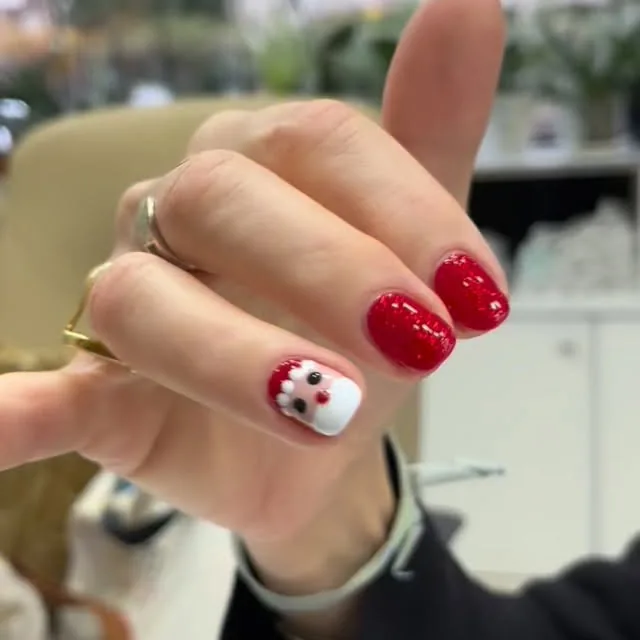

Éloge de l’ongle court
Par 36 Beauté · Novembre 2026 · 2 min de lecture
Sur les réseaux, un ongle doit mesurer deux centimètres et finir en amande. Dans la vraie vie, il y a des claviers, des enfants à attacher en voiture, de la pâte à pizza et des cordes de guitare.
Disons-le clairement : un ongle court n’est pas une version ratée d’un ongle long. C’est un choix, et il a de la tenue.
Ce qui fait une belle main courte
La longueur ne fait pas tout. Ce qui se voit, c’est une forme régulière d’un doigt à l’autre, des contours propres et une surface bien lisse. Une simple manucure avec un vernis, à 20 €, change déjà tout. On le remarque sans savoir exactement pourquoi, et c’est bien le but.
Les couleurs n’ont pas le même effet
Contrairement à ce qu’on entend, le foncé va très bien sur ongle court. Un rouge profond ou un bleu nuit, sur une forme arrondie, a quelque chose de très chic, presque sage. À l’inverse, les tons proches de la peau allongent visuellement le doigt, si c’est ce que vous cherchez.
Trois idées qui ne demandent aucune longueur
- Une seule petite touche. Un point, un trait ou un cœur sur un seul ongle. Le nail art est à 1 € l’unité au salon : c’est sans doute le plaisir le moins cher du quartier.
- Une french très fine. Elle n’a pas besoin de beaucoup de surface, au contraire. Comptez 5 € en supplément.
- Le babyboomer. Ce dégradé laiteux, du rose vers le blanc, fonctionne aussi sur les petits ongles. Il est à 10 € en supplément.
Garder une jolie forme chez soi
Un ongle court demande un peu de suivi, car le moindre écart se voit plus vite. Trois habitudes suffisent :
- Préférez la lime au coupe-ongles pour les retouches. Elle évite de fendre un ongle déjà fin.
- Limez dans un seul sens, sans ce mouvement de scie qui effiloche le bord.
- Choisissez une forme et gardez-la : un carré aux coins adoucis accroche moins, un arrondi suit bien le bout du doigt.
Regardez aussi la forme de vos doigts. Sur des ongles larges, un arrondi affine. Sur des doigts longs, un carré doux tient très bien. Et si vous ne savez pas, demandez : changer de forme ne prend que quelques minutes.
Et pour les ongles rongés ?
Pas de leçon de morale ici. Certaines personnes trouvent qu’un semi-permanent les aide à laisser leurs ongles tranquilles : la surface est lisse, et on n’a pas envie de gâcher une couleur qu’on vient de choisir. Ça ne marche pas à tous les coups, et ce n’est pas une promesse. Mais ça vaut un essai, et personne au salon ne vous regardera de travers. Venez comme vous êtes, même avec deux millimètres.
On s’occupe de vos ongles ?
Prestation et créneau se choisissent sur notre page Planity.
Réserver en ligne